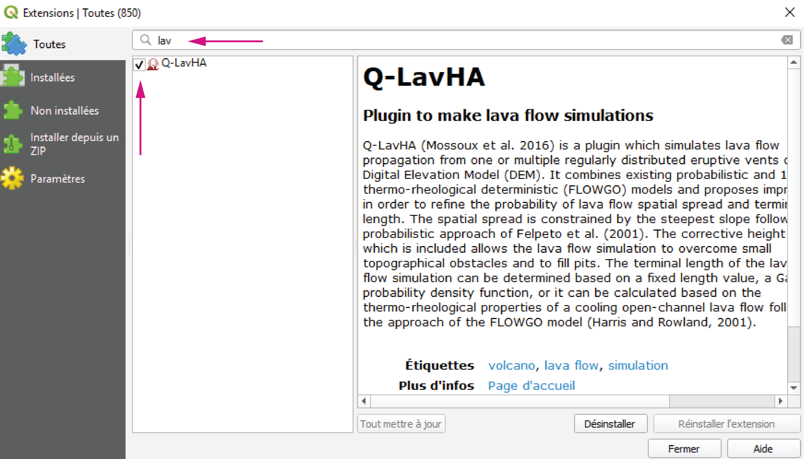
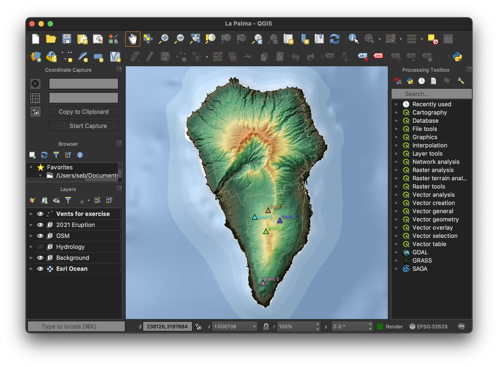

Setting up QGIS
This section explains how to install Q–LavHA, a model for the probabilistic hazard assessment of lava flows working as a QGIS plugin.
Objectives
- Install
Q–LavHA.
Installing Q-LavHA
- From the
Moodlepage of the class, download theVolcanicRisk2022.zipfile and extract it somewhere on your personal user drive. - Make sure
QGISis closed. - In Windows, navigate to the following folder, where
$USERis your ISIS username:
Alternative link
Note
- If the
pluginsfolder doesn't exist, please create it. - The
Users\folder might be namedUtilisateursin French
- Copy the
Qlavha_v3folder to thepluginsfolder.
Use your user disk!
If you are using the PC of the computer lab, make sure your files are saved on your personal drive! This is typically the H:\ drive. Otherwise, your files will be deleted every time you logout!
Starting QGIS
- Search for
QGIS 3.2xand start it. Depending on the computer, the version might vary between3.20and3.23. Please take the most advanced one.
Activate Q-LavHA
To activate Q–LavHA in QGIS:
- Re-open
QGISas previously. - From the Menu Bar, open the
Plugins>Manage and Install Pluginswindow. - Following Figure 3, search for
lavaand activate the plugin. - There should now be a
Q-LavHAicon in the Toolbar.

Loading data
The Lava_Flow_Exercise_2022.zip file downloaded from Moodle contains a Lava flow exercise folder that contains these files:
LaPalma_exercise_2022.qgz: MainQGISfile.Data/exercise.gpkg: Geopackage containing some vector files for the exercise.lapalma.gpkg: Geopackage containing some vector files on previous eruptions at La Palma.osm.gpkg: Geopackage containing openstreetmap files.DEM/: Folder containing some pre-processed DEM files.Hydro: Folder containing hydrological analyses.
Open the LaPalma_exercise_2022.qgz file.
Centering the map
If you don't see any data on the map, click the Background layer group in the Layer panel and click Zoom to group.
You should now see something similar to this:

Save regularly!
QGIS is amazing, but it can be unstable at time. Make sure you regularly save your project throughout the exercise!